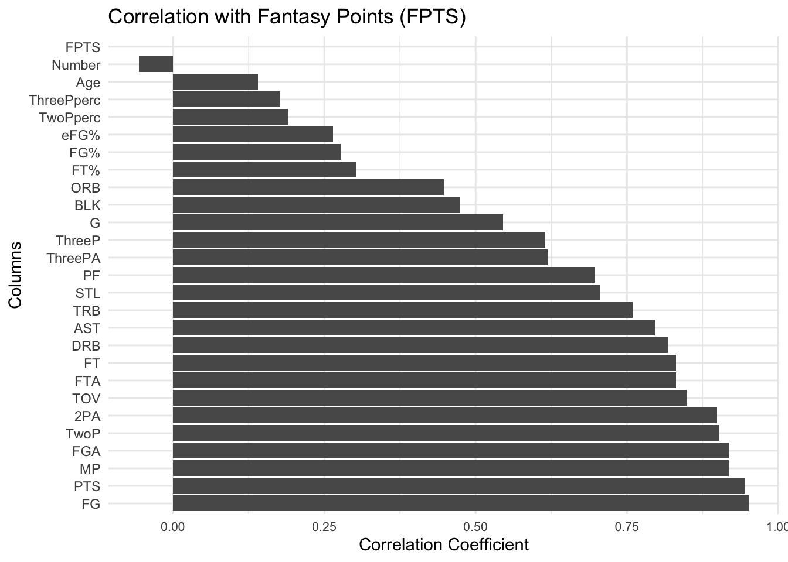

library(tidyverse)
library(keras)
library(readr)
library(dplyr)
library(ggplot2)
library(tidyr)
library(here)
library(fastDummies)
library(gridExtra)fbb_modeling
# THIS CODE CHUNK CLEANS UP CODE
# Read in data set
data <- read_csv(here::here("data", "2022_2023_regular_season_data_81723.csv"))
# Rename columns with special characters to avoid errors
data <- data %>%
rename(
ThreeP = `3P`,
ThreePA = `3PA`,
ThreePperc = `3P%`,
TwoP = `2P`,
TwoPperc = `2P%`
)
# Identify the most recent team for each player
recent_team <- data %>%
group_by(Number) %>%
slice_tail(n = 1) %>%
select(Number, Tm)
# Keep only the first row for each player
first_rows <- data %>%
group_by(Number) %>%
slice_head(n = 1)
# Join the datasets to get the most recent team for each player
final_data <- first_rows %>%
left_join(recent_team, by = "Number") %>%
mutate(Tm = coalesce(Tm.y, Tm.x)) %>%
select(-Tm.x, -Tm.y)
# Write the updated data to a new CSV file
write_csv(final_data, "Data/final_data.csv")## Making some visuals
# Group the data by team and sum the fantasy points
team_fpts <- final_data %>%
group_by(Tm) %>%
summarise(Total_Fantasy_Points = sum(FPTS, na.rm = TRUE)) %>%
arrange(desc(Total_Fantasy_Points)) # Sort by total fantasy points in descending order
# Convert the Tm variable to a factor with levels ordered by Total_Fantasy_Points
team_fpts <- team_fpts %>%
mutate(Tm = factor(Tm, levels = .$Tm))
# Create a bar chart of total fantasy points by team
total_fpts_per_team <- ggplot(team_fpts, aes(x = Tm, y = Total_Fantasy_Points)) +
geom_bar(stat = "identity", width = 0.5, # Make the bins half as narrow
aes(fill = Total_Fantasy_Points)) + # Color by total fantasy points
labs(title = "Total Fantasy Points by Team per Game", x = "Team", y = "Total Fantasy Points per Game") +
theme_minimal() +
scale_fill_gradient(low = "Yellow", high = "Purple") + # Set the colors for the fill gradient
theme(axis.text.x = element_text(size = 4))
# Save image
ggsave(here::here("charts", "total_fpts_per_team.png"), plot = total_fpts_per_team, width = 6, height = 4)plot_team_fantasy_points <- function(data, team_name) {
# Filter the data for the specified team
team_data <- data %>%
filter(Tm == team_name) %>%
arrange(desc(FPTS)) %>%
mutate(Player = factor(Player, levels = Player)) # Order players by descending fantasy points
# Create a bar chart of the players' fantasy points
p <- ggplot(team_data, aes(x = Player, y = FPTS)) +
geom_bar(stat = "identity") +
labs(title = paste("Fantasy Points for", team_name), x = "Player", y = "Fantasy Points") +
theme_light() +
scale_fill_gradient(low = "red", high = "green") +
theme(axis.text.x = element_text(angle = 45, hjust = 1)) # Rotate x-axis labels for readability
return(p)
}
save_team_charts <- function(data) {
unique_teams <- unique(data$Tm)
for (team in unique_teams) {
plot <- plot_team_fantasy_points(data, team)
file_name <- paste0("charts/", team, "_fantasy_points.png")
ggsave(here::here(file_name), plot = plot, width = 10, height = 6)
}
}Plotting a variable vs fantasy points
# Function to create and save a chart with fantasy points vs a specified variable
plot_fantasy_points <- function(data, variable) {
# Check if the specified variable exists in the data
if (!variable %in% names(data)) {
print(paste("Error: '", variable, "' column not found in the data.", sep=""))
return
}
# Check if the 'FPTS' column exists in the data
if (!"FPTS" %in% names(data)) {
print("Error: 'FPTS' column not found in the data.")
return
}
# Group the data by Age and summarize with mean and standard deviation
grouped_data <- final_data %>%
group_by(Age) %>%
summarise(
mean_FPTS = mean(FPTS, na.rm = TRUE),
sd_FPTS = sd(FPTS, na.rm = TRUE),
n = n()
)
# Scatter plot of individual data points
scatter_plot <- ggplot(final_data, aes(x = Age, y = FPTS)) +
geom_point(alpha = 0.3) + # Semi-transparent points
theme_light()
# Box plot for range within each age
box_plot <- ggplot(final_data, aes(x = as.factor(Age), y = FPTS)) +
geom_boxplot() +
theme_light()
# Line plot for mean and standard deviation
line_plot <- ggplot(grouped_data, aes(x = Age, y = mean_FPTS)) +
geom_line() +
scale_color_gradient(low = "yellow", high = "purple") + # Set the color gradient
geom_ribbon(aes(ymin = mean_FPTS - sd_FPTS, ymax = mean_FPTS + sd_FPTS), alpha = 0.3) +
theme_light()
# Display the plots
combined_plot <- gridExtra::grid.arrange(scatter_plot, box_plot, line_plot, ncol = 1)
# Save the combined plot to the charts folder
ggsave(filename = "charts/fantasy_points_vs_age.png", plot = combined_plot, width = 14, height = 12)
}Fantasy point correlation
# Define a function to find the strongest correlations with the target column
find_strongest_correlations <- function(data, target_col) {
# Check if the target column exists in the data
if (!target_col %in% names(data)) {
print(paste("Error: '", target_col, "' column not found in the data.", sep=""))
return(NULL)
}
# Select numeric columns
numeric_data <- select_if(data, is.numeric)
# Remove rows with NA values in the target column
numeric_data <- numeric_data[!is.na(numeric_data[[target_col]]), ]
# Calculate the Pearson correlation coefficients
correlations <- map_dbl(names(numeric_data), function(col) {
if (col != target_col) {
cor(numeric_data[[col]], numeric_data[[target_col]], method = "pearson", use = "complete.obs")
} else {
NA
}
})
# Create a data frame of column names and their correlations with the target column
correlation_df <- data.frame(
column_name = names(numeric_data),
correlation = correlations,
stringsAsFactors = FALSE
)
# Sort by absolute correlation in descending order
correlation_df <- correlation_df %>%
arrange(desc(abs(correlation)))
return(correlation_df)
}
# Example usage of the find_strongest_correlations function
correlation_results <- find_strongest_correlations(final_data, 'FPTS')
# Create a bar chart to visualize the correlations
correlation_plot <- ggplot(correlation_results, aes(x = reorder(column_name, -abs(correlation)), y = correlation)) +
geom_bar(stat = "identity") +
coord_flip() + # Flip the axes for a horizontal bar chart
labs(title = "Correlation with Fantasy Points (FPTS)",
x = "Columns",
y = "Correlation Coefficient") +
theme_minimal() +
scale_fill_gradient(low = "yellow", high = "purple", name = "Absolute Correlation") + # Shade bars based on absolute correlation
theme(axis.text.x = element_text(size = 8))
# Display the plot
print(correlation_plot)
# Save the plot to the charts folder
ggsave(filename = "charts/correlations_with_fpts.png", plot = correlation_plot, width = 8, height = 6)Weighted rankings
# # Calculate the age factor
# age_factor <- 0.05 # Example age factor of 5% per year
#
# # Calculate the average change in FPPG for players who got a year older
# aging_effect <- final_data %>%
# group_by(Number) %>%
# arrange(Age) %>%
# mutate(FPPGchange = FPTS - lag(FPTS)) %>%
# filter(!is.na(FPPGchange)) %>%
# summarise(AgingEffect = mean(FPPGchange, na.rm = TRUE)) %>%
# pull(AgingEffect)
#
# # Calculate the TeamPotential score for each player
# final_data <- final_data %>%
# group_by(Tm) %>%
# mutate(TeamAverageFPPG = sum(FPTS, na.rm = TRUE) / sum(G, na.rm = TRUE)) %>%
# ungroup() %>%
# mutate(
# PlayerFPPG = FPTS / G,
# AgeFactor = 1 - (1 - age_factor)^(Age - min(Age)),
# TeamPotential = (PlayerFPPG * (1 - AgeFactor)) + (TeamAverageFPPG * (1 - AgeFactor)) + AgingEffect
# )
#
# # View the updated data
# head(final_data)Modeling with neural networks try 2
# # Preprocess data
# final_data$Position <- as.factor(final_data$Pos)
# final_data <- dummy_cols(final_data, select_columns = 'Pos')
# final_data <- final_data %>% select(-Position)
#
# # Split data into features and target
# X <- final_data %>% select(Age, MP)
# y <- final_data$FPTS
#
# # Normalize features
# mean <- apply(X, 2, mean)
# std <- apply(X, 2, sd)
# X <- scale(X, center = mean, scale = std)
#
# # Define neural network model
# model <- keras_model_sequential() %>%
# layer_dense(units = 64, activation = 'relu', input_shape = ncol(X)) %>%
# layer_dense(units = 32, activation = 'relu') %>%
# layer_dense(units = 1)
#
# # Compile model
# model %>% compile(
# optimizer = optimizer_adam(lr = 0.01),
# loss = 'mean_squared_error',
# metrics = c('mean_absolute_error')
# )
#
# # Train model
# history <- model %>% fit(
# X,
# y,
# epochs = 200,
# batch_size = 32,
# validation_split = 0.2
# )
#
# # Predict for a 25 year old center who plays 30 minutes per game
# new_data <- data.frame(Age = 25, Position_C = 1, Position_PF = 0, Position_PG = 0, Position_SF = 0, Position_SG = 0, Minutes = 30)
# new_data <- scale(new_data, center = mean, scale = std)
# prediction <- model %>% predict(as.matrix(new_data))
#
# print(prediction)Modeling with neural networks try 1
# # Assume df is your data frame
# # Preprocess the data
# data <- as.matrix(df)
# data <- normalize(data)
#
# # Split the data into training and testing sets
# set.seed(123)
# index <- sample(1:nrow(data), nrow(data) * 0.8)
# train_data <- data[index, ]
# test_data <- data[-index, ]
#
# # Define the network architecture
# model <- keras_model_sequential() %>%
# layer_dense(units = 64, activation = "relu", input_shape = ncol(train_data)) %>%
# layer_dense(units = 32, activation = "relu") %>%
# layer_dense(units = 16, activation = "relu") %>%
# layer_dense(units = ncol(train_data), activation = "linear")
#
# # Compile the model
# model %>% compile(
# loss = "mean_squared_error",
# optimizer = optimizer_adam(),
# metrics = c("mean_absolute_error")
# )
#
# # Train the model
# history <- model %>% fit(
# train_data, train_data,
# epochs = 200,
# batch_size = 32,
# validation_data = list(test_data, test_data)
# )
#
# # Evaluate the model
# eval <- model %>% evaluate(test_data, test_data)
# print(eval)
#
# # Make predictions
# predictions <- model %>% predict(new_data)–>